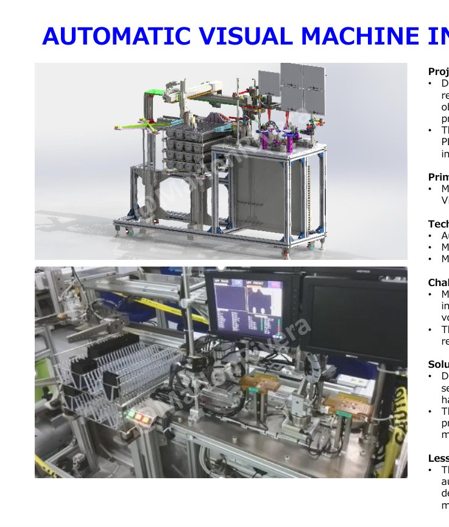
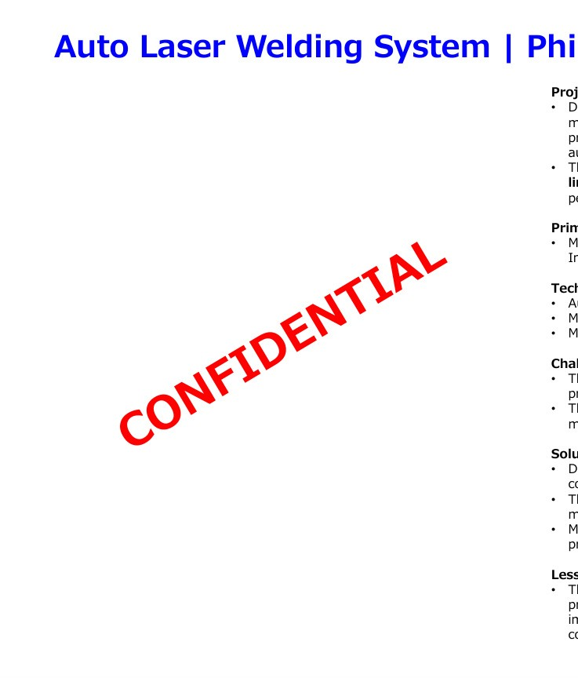
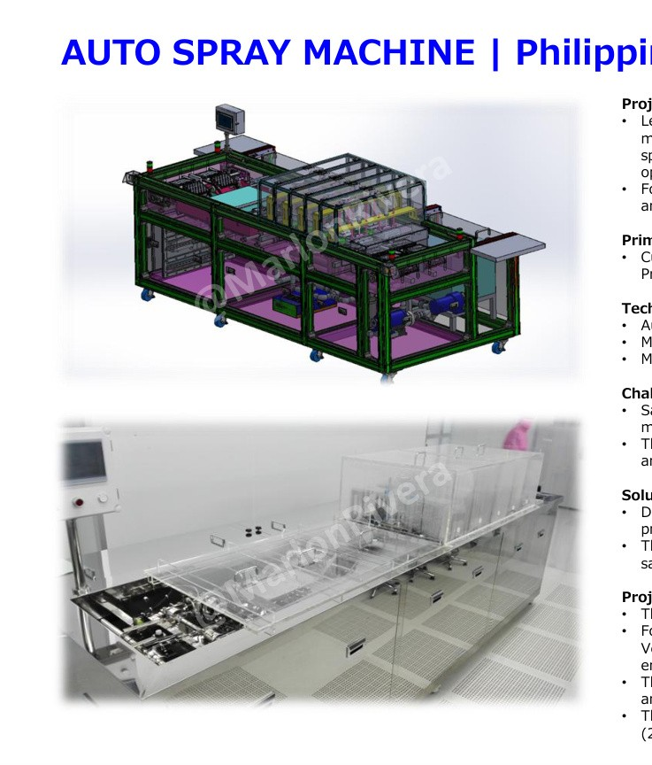
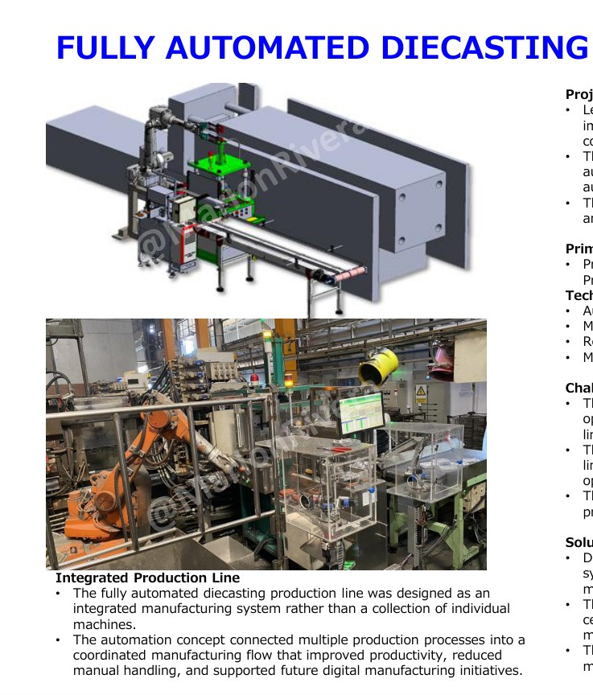
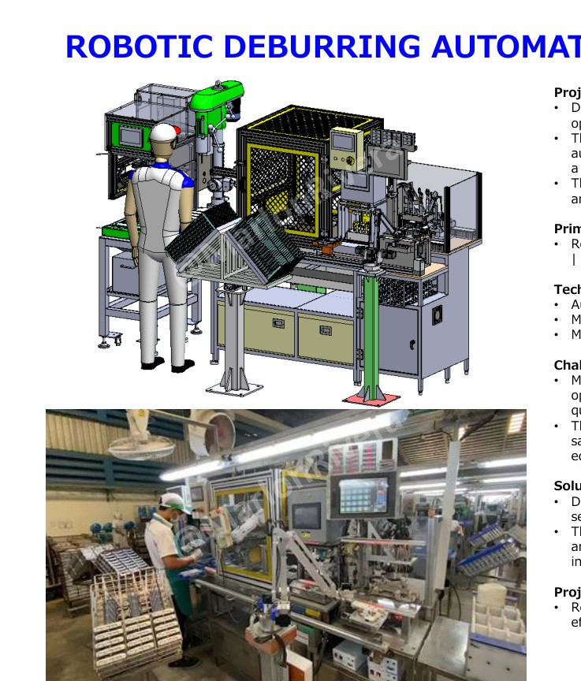
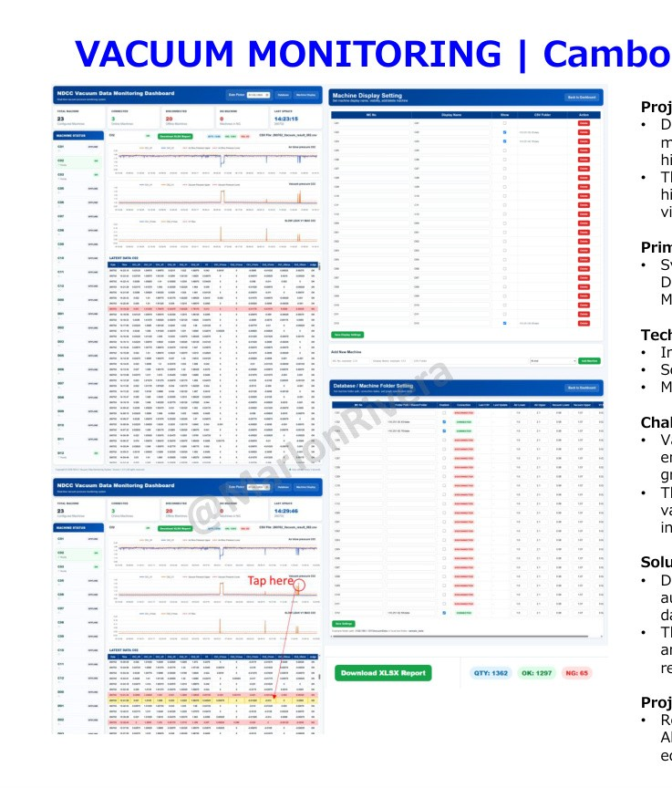
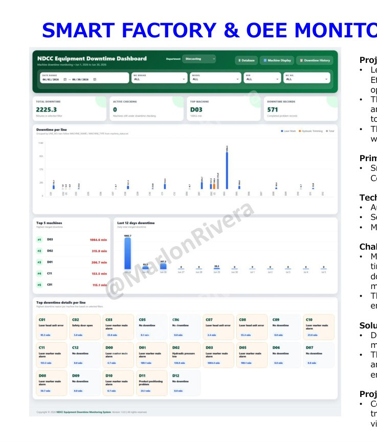

01
Industrial Automation & Controls
Mitsubishi GX Works2/GX Works3, Siemens TIA Portal, Omron CX-One/Sysmac, Keyence KV Studio, HMI development, industrial networking and machine commissioning.
Senior Automation & Controls Engineer
Engineering professional with 13+ years of international experience delivering complete automation projects from concept design and mechanical development through programming, commissioning, qualification and production handover.
Professional Profile
I design, program, commission and support industrial automation systems across the Philippines, Thailand, Vietnam, Korea and Cambodia. My work combines mechanical design, controls engineering, robotics integration, servo motion, vision systems, pneumatics and manufacturing software.
In my current leadership role, I support more than 100 production lines and lead a multidisciplinary team of approximately 60 engineers and technicians while reporting directly to executive management.
Core Expertise
Mitsubishi GX Works2/GX Works3, Siemens TIA Portal, Omron CX-One/Sysmac, Keyence KV Studio, HMI development, industrial networking and machine commissioning.
SolidWorks 3D/2D, AutoCAD, complete machine assemblies, production fixtures, tooling, conveyor systems, fabricated structures and safety-oriented machine design.
ABB, Nachi, Yamaha, IAI actuators, THK motion systems, servo and stepper systems, multi-axis motion, robot cell integration and EOAT.
Keyence vision systems, automated visual inspection, camera inspection, precision positioning, barcode systems and sensor integration.
Python, FastAPI, HTML, JavaScript, SQL, REST APIs, OEE monitoring, equipment dashboards, production data collection and Industry 4.0 implementation.
Customer requirements, concept development, proposals, costing, planning, supplier coordination, multidisciplinary teams, FAT/SAT, training and production handover.
Engineering Portfolio
Click any project to view its engineering overview, responsibilities, technologies, challenges and solutions.

Automated vision inspection replacing manual quality checks for high-volume electronics manufacturing.

Precision automated laser welding system supporting approximately 50,000 units per line per month.

Complete machine design and automation platform recognized through Korean Government patent recognition.

Integrated robots, transfer automation, trimming, deburring and production monitoring into one coordinated line.

Nachi robot cell integrating PLC, HMI, servo motion, pneumatic clamping, safety and automated handling.

Centralized predictive-maintenance platform with real-time dashboards, historical trends and alarm management.

PLC-integrated platform centralizing equipment status, downtime history, OEE and production analytics.
Career Journey
Lead automation, maintenance, machine design and Smart Factory initiatives supporting 100+ production lines and 60 engineers/technicians. Deliver complete equipment from concept through production handover and report directly to COO and Directors.
Primary automation engineer handling mechanical design, electrical integration, PLC/HMI programming, assembly, installation, commissioning and production support.
Led design and programming teams, worked directly with international customers, managed multiple projects and delivered machines to the Philippines, Vietnam and Korea.
Designed and programmed production automation, vision systems, laser welding systems and 3-axis robotics while supporting qualification, troubleshooting and continuous improvement.
Education & Recognition
Manuel S. Enverga University Foundation, Philippines
Batangas State University JPLPC, Philippines
DETI — Authorized SolidWorks Training Center
Recognized for engineering innovation, leadership and project execution.
Contact
Available for automation, controls, mechanical design, robotics, smart manufacturing and project-engineering opportunities worldwide.